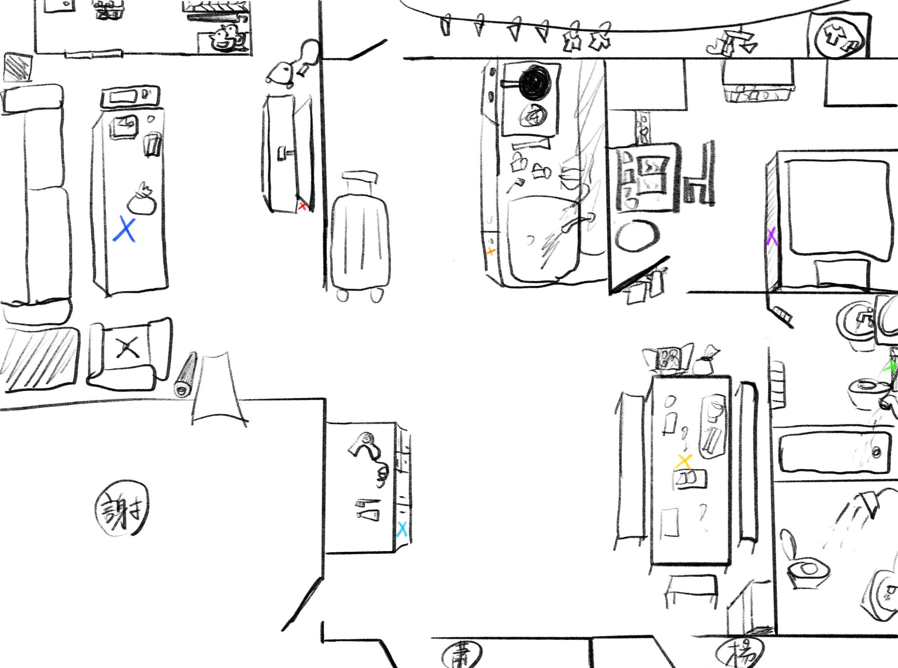

第三關 · 尋寶開始
藏寶圖
這張尋寶圖上的特殊標記有種奇怪的規律，
請按照你所發現的規律尋找寶藏。

尋星 · 1 / 7
恭喜您已拾取所有秘寶
古老的王留下了一串古老文字，將其銘記心中或許會獲得意外之喜
「 XdRe 」
最後一關
收集星星
按一下星星
這是六顆裡的第三顆
★ 已收集
你找到了 3 顆星星
這張尋寶圖上的特殊標記有種奇怪的規律，
請按照你所發現的規律尋找寶藏。

「 XdRe 」
按一下星星
這是六顆裡的第三顆
你找到了 3 顆星星